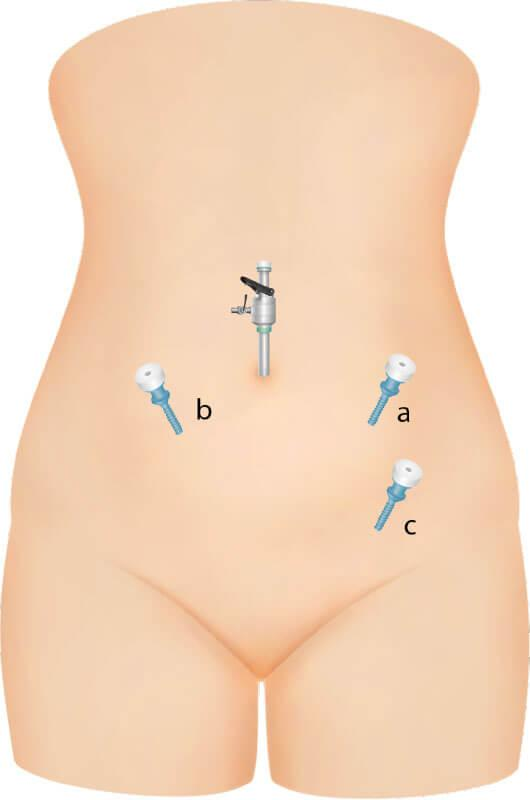

Egg theft
- Once security services and governments around the world heard about the world’s most famous sedated-rape-porn star surviving repeated attempts at murder by poisoning, it’s been a free for all.
- Everyone thinks they can hunt her down and own her. Everyone wants a slice, a crumb, grinning inanely when they’re winning, whispering threats and put downs when they’re not.
- Just like hunters in Africa desperate to kill and destroy what they venerate, fear, and revere, and thus, apparently, triumph.
- Whatever potential I have, and the gifts God has given me for the whole world, are utterly irrelevant to these totally insane humans.
- These people are horror-show exterminators, playing God.
- So what’s really behind such total insanity.
Motive, trophy
- It’s a motive as far from God as you could imagine; behavior utterly devoid of God. And that’s why they will not prevail.
- They can’t really believe God’s gifts - freely given only after years of fervent prayer, meditation, spiritual study, and following His Instructions no matter how harsh - get passed down to offspring with fathers obsessed with criminal porn; that’s too ridiculous even for a mad person. I think they thought rather unGodly Steve gave it to me! And that’s even madder! The thought that having made it to God’s protection, I might be in the best position to help others join me, never crossed their tiny minds. These people need our help and probably shouldn’t be parents of any offspring they’re so crazy.
- So we’re only left with trophy as a motive; trophies from the most famous sedated-rape-porn star, renowned all over the world. The concomitant expectations for any children born for this reason are too hideous to imagine. It’s almost like bible prophecies are coming true right before our eyes, and not the good bits, yet.
Pregnancies nearly full term
- Word on the street is there are currently (time of writing August 2026) two pregnancies nearly at full term.
- This would mean egg-theft took place sometime in November 2025 and most likely at the Oriental Residence hotel next to the American Embassy in Bangkok I was lured to.
Babies born
- I know a girl was born in May 2026 as I can feel her.
- I’m making the same movements she makes.
- Word online confirms it.
- This means egg-theft took place right after poisoning in Lourdes while I was in Cauterets in August 2025, and indeed the place was swarming with agents the whole time I was there.
- They would even tell me what I had been doing in the bathroom while I was at the shops: cup cakes in reference to my boobs popping out of the bubbles in the bath.
- Interestingly, I had the last period I’ve had right after I got back from France.
- My feeling is all this messing around with my body - sedated rape, sedated surgery - stopped them early.
Dublin April 2025
- This was the first time they did it… which means any offspring arising from surgeries happening in my hotel room at the Anantara could be months old already.
Dorset theft
- Egg-theft functional and in full swing now, they let the Brits have an egg or two too didn’t they, which puts potential pregnancies from the eggs stolen in Dorset at the six months stage.
- Let’s assume that all the chats, the pictures of rams horns and squirrels, and the ever present suggestion a helicopter was coming to rescue me at the Booking.com accommodation in Dorset was just intense distraction while egg-extraction took place.
- While staying there I even had an ache in my left ovary, as I will do again in Bali in July 2025.
- I had said online on X that just the image of a squirrel, strawberries, and a ram made my ovaries fire up.
- They had responded back that I have ovarian cancer.
- Nice bunch aren’t they.
Dublin theft
- April 2026 at the Beckett Locke hotel-cum-CIA-HQ more egg-theft took place; they’re probably raffling them online now.
- That would make any potential pregnancies at the four months stage.
- Being woken up by what sounded like people running down the corridor with a bag of ice cubes is quite interesting now, in a medical sense.
- Creating a callous in my hand while sleeping for no reason I can fathom is also marvelously explained.
Bali theft
- Obviously they just got some more, so we’ll have to wait and find out about those.
- I felt like they had gone in via my back passage, but maybe they messed up and punctured my bowel and let a little bit of the CO2 in because I was farting so weirdly the whole day afterwards.
- I’m starting to worry that Elon’s visit to the Holiday Inn the week before I arrived at the Loka Yoga housing estate and his insistence on having me see him the night of the full moon, means he had been invited to the free for all on Katharine, a sequel even more triumphant than the first, for him.
Physical evidence
Pinhole scars
- Currently (August 2026) I have evidence of c below on the right side.

- It came up new and a little infected in Bali. I realized then it was unusual.
- However, I also knew it was actually a reopened scar that I had not noticed as suspicious in April at Beckett Locke, because I mean, who would believe such thing!
- But I remembered it in Bali as the same scar reopening, so they must have gone in through the same opening again in July.
- I didn’t think anything of it in April, even though it didn’t behave like a spot, and even though there were spiritual memes flying around to do with eggs, and pregnancy, and Steve had become strangely moody when I mentioned eggs, never mind the people running down the hall carrying big bags of ice which made quite a noise and woke me up at ⅔am outside my room.
- I also believe I had another scar just like this one but closer to my naval in November or December of last year.
Easy to see on examination
- Evidence of all this, I’m told, is easy to see on internal examination and I can see now why no-one wanted to help me out with health care, especially concerning my left hip injury which I believe is related.
- The left hip injury felt like something broke and crunched inside after just two seconds of running.
- I wonder what that could have been/be. It is very unusual. Something left inside? Some key part of my body cut and broken in error?
- I’m told egg-extraction is easy to see as, even though the pinhole is small and non-obvious, the surgery itself leaves internal scarring and other obvious signs, and I can’t imagine they took any due care given how everyone feels about me.
- It’s a thing you know, to hate me - very fashionable, a must do in certain circles.
- Who knows what mess they made inside.
- We’ll have to have a look, won’t we.
Total free for all
- One wonders when and how they were going to finish me off, because that was a certainty, clearly.
- No wonder they’ve been swarming around me here; threatening, ice cold American women.
- People are aggressive, oppressive, and violent in ratio with their guilt levels about what they’ve done or are doing to you.
- It’s a solid equation.
- The more they hate you, the more they can justify the evil they’re doing to you, and it’s so obvious too with the constant taunting and (not so) veiled threats.
- My guess the second two weeks of Bali is when they planned to put finish me off, and my senses telling me to pack and leave were life saving.
- I’ve said it before, and I will say it again and again.
- I may have been raped a thousand times by a thousand men while sedated - and remaining celibate - but this is infinitely more violating and I believe the whole world will agree with me.
Seeing the Abomination of Desolation in the Holy Place
- They did didn’t they.
- It’s the kind of thing they’d do.
- Who gets paid, I wonder.
- Bloody stupid idiots.
- How many? And where? I want to know everything and we will see what we should do. What God would have us do to fix this, to make it His.
- I expect they were planning on trying to make me look insane… compelled to make it worse for themselves of course.
- Do you think this is what happens to shady groups like this with unlimited power and budget, and no true or loving goal; they lose their minds, behave outrageously, do more damage than good, the damage gets to extreme proportions which cannot be ignored anymore, and then something even more outrageous has to be done to deal with it, and they’re so guilty about it all, they think involving everyone else will help them save face?
- Seems likely.
- I’m concerned for the safety of my children. What if they’re in dangerous environments?
- Let’s assume that any environment that sees a child like a hunters trophy, its mother a leprous vile and unhuman thing, and can justify the abomination of desolation on anyone for any reason at all is a dangerous one.
- Will the fact the children are cuckoos, as it were, put them at elevated risk of abuse?
- What exactly was these people’s end goal here? Undoubtedly an insane one, but I’d like to hear it nonetheless. I wonder if their tongues might rot in their mouths as they speak it.
- Am I still understating the matter?
- For the last four or so years, decades even, I have been soaked in evil with no support. Everywhere I turn there’s evil, and not just a little bit, masses of unspeakable evil.
- Again and again I ask, when does it end, how much are we supposed to endure of this, when do we get a break Father, thinking nothing can possibly top what I’m already dealing with…
- And then it does.
- Just like in Dénia, everyone must have received the memo about my assured murder, amiright, of course I am.
- So what’s next? I cannot imagine there could be anything worse now. This really is .. there’s no words for how abhorrent and abominable these mad choices people thought justifiable are.
- The champion of champions’ abomination of desolation, by far.
- And, this hidden evil started to bubble up towards the light last week (time of writing 22nd August 2026) when one morning, inexplicable and unusual for me I became full of sorrow, down in my stomach heart and throat, and I cried at the juice bar. There was a woman beside me, she was either very pregnant or holding a tiny baby, and there was a small brother, Michael, and the woman was ashamed and red faced, and tears started to role down my face… and I couldn’t understand it, it didn’t make sense, but the truth was rolling in.
- I had seen the abomination of desolation in the holy place.